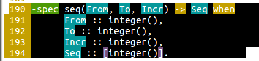
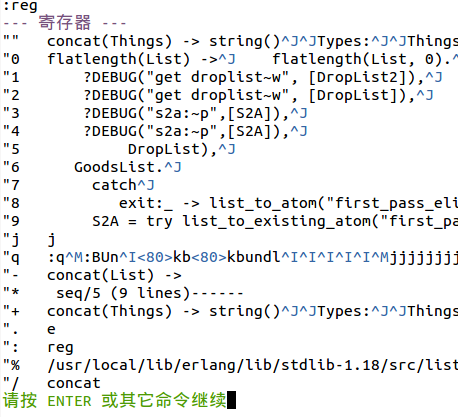
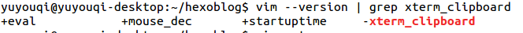

在vim中一般都是按v进入可视化,然后hjkl移动光标选择范围,然后按y复制所选内容,然而这样复制的内容并不在系统剪切板中,而在vim自己的剪切板,要复制到系统gedit或者浏览器里我一般是用鼠标选中范围,然后右键复制,但是蛋疼的是代码行号总是被复制,像这样

所以我尝试找找有没有更方便的方法,网上说复制的时候不要用y而是用"+y的形式将内容复制到全局寄存器,这样就可以粘贴到别的地方了.
但是我试了好几次都不行,之后在vim中用
:reg
命令查看下自己的寄存器,

我的一开始是没有 "+这个寄存器的.
也可以在shell中用
vim --version | grep xterm_clipboard
查看下xterm_clipboard前面是+还是_

如果是"-"说明不支持这个功能.
我还以为需要从装一遍vim,怕自己那么多插件又得从装,其实只需要执行
sudo apt-get install vim-gui-common
就可以支持+储存器了,这时我们选中范围后按"+y就复制到+寄存器中,在外面就可以ctrl+v复制了.
当然这个命令还是麻烦
我们可以修改.vimrc,在其中添加一条map映射
vmap <C-c> "+y
vmap是在VISUAL模式下的映射,是在按了v进入可视化之后才启用,
将系统剪切板的东西复制进vim比较简单,可以进入插入模式,直接右键粘贴,也可以shift+insert.这个不需要+寄存器的支持也可以用.